2026 Higher Chemistry - Paper 2 marking instructions
Source: Scottish Qualifications Authority (SQA) / Qualifications Scotland. This is a StemInteract HTML companion, not an official HTML edition. Selectable text is supplied alongside original page images. Use the images or original PDF for equations, powers, fractions, vector notation, tables and diagrams; text extraction cannot fully preserve mathematical layout.
Jump to a question
PDF page 1
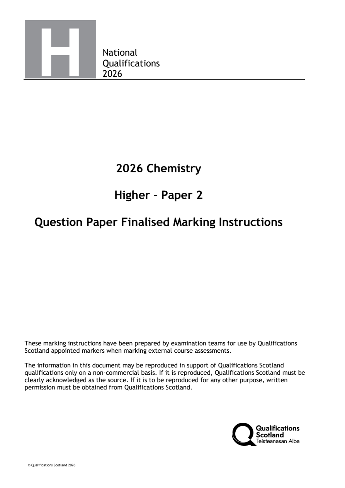
Selectable page text
National
Qualifications
2026
2026 Chemistry
Higher – Paper 2
Question Paper Finalised Marking Instructions
These marking instructions have been prepared by examination teams for use by Qualifications
Scotland appointed markers when marking external course assessments.
The information in this document may be reproduced in support of Qualifications Scotland
qualifications only on a non-commercial basis. If it is reproduced, Qualifications Scotland must be
clearly acknowledged as the source. If it is to be reproduced for any other purpose, written
permission must be obtained from Qualifications Scotland.
© Qualifications Scotland 2026PDF page 2
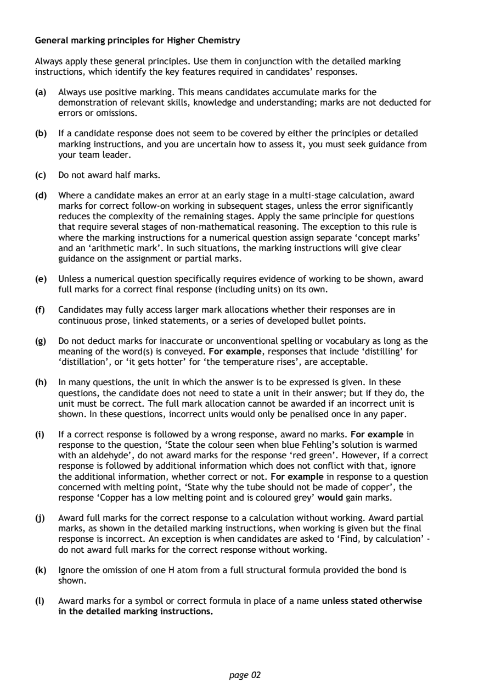
Selectable page text
General marking principles for Higher Chemistry
Always apply these general principles. Use them in conjunction with the detailed marking
instructions, which identify the key features required in candidates’ responses.
(a) Always use positive marking. This means candidates accumulate marks for the
demonstration of relevant skills, knowledge and understanding; marks are not deducted for
errors or omissions.
(b) If a candidate response does not seem to be covered by either the principles or detailed
marking instructions, and you are uncertain how to assess it, you must seek guidance from
your team leader.
(c) Do not award half marks.
(d) Where a candidate makes an error at an early stage in a multi-stage calculation, award
marks for correct follow-on working in subsequent stages, unless the error significantly
reduces the complexity of the remaining stages. Apply the same principle for questions
that require several stages of non-mathematical reasoning. The exception to this rule is
where the marking instructions for a numerical question assign separate ‘concept marks’
and an ‘arithmetic mark’. In such situations, the marking instructions will give clear
guidance on the assignment or partial marks.
(e) Unless a numerical question specifically requires evidence of working to be shown, award
full marks for a correct final response (including units) on its own.
(f) Candidates may fully access larger mark allocations whether their responses are in
continuous prose, linked statements, or a series of developed bullet points.
(g) Do not deduct marks for inaccurate or unconventional spelling or vocabulary as long as the
meaning of the word(s) is conveyed. For example, responses that include ‘distilling’ for
‘distillation’, or ‘it gets hotter’ for ‘the temperature rises’, are acceptable.
(h) In many questions, the unit in which the answer is to be expressed is given. In these
questions, the candidate does not need to state a unit in their answer; but if they do, the
unit must be correct. The full mark allocation cannot be awarded if an incorrect unit is
shown. In these questions, incorrect units would only be penalised once in any paper.
(i) If a correct response is followed by a wrong response, award no marks. For example in
response to the question, ‘State the colour seen when blue Fehling’s solution is warmed
with an aldehyde’, do not award marks for the response ‘red green’. However, if a correct
response is followed by additional information which does not conflict with that, ignore
the additional information, whether correct or not. For example in response to a question
concerned with melting point, ‘State why the tube should not be made of copper’, the
response ‘Copper has a low melting point and is coloured grey’ would gain marks.
(j) Award full marks for the correct response to a calculation without working. Award partial
marks, as shown in the detailed marking instructions, when working is given but the final
response is incorrect. An exception is when candidates are asked to ‘Find, by calculation’ -
do not award full marks for the correct response without working.
(k) Ignore the omission of one H atom from a full structural formula provided the bond is
shown.
(l) Award marks for a symbol or correct formula in place of a name unless stated otherwise
in the detailed marking instructions.
page 02PDF page 3
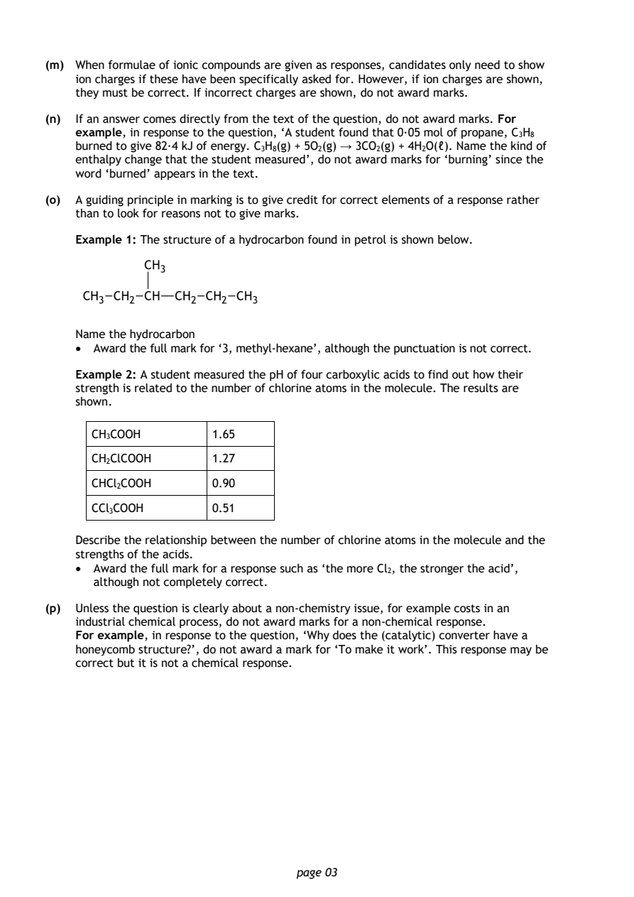
Selectable page text
(m) When formulae of ionic compounds are given as responses, candidates only need to show
ion charges if these have been specifically asked for. However, if ion charges are shown,
they must be correct. If incorrect charges are shown, do not award marks.
(n) If an answer comes directly from the text of the question, do not award marks. For
example, in response to the question, ‘A student found that 0·05 mol of propane, C₃H₈
burned to give 82·4 kJ of energy. C₃H₈(g) + 5O₂(g) → 3CO₂(g) + 4H₂O(ℓ). Name the kind of
enthalpy change that the student measured’, do not award marks for ‘burning’ since the
word ‘burned’ appears in the text.
(o) A guiding principle in marking is to give credit for correct elements of a response rather
than to look for reasons not to give marks.
Example 1: The structure of a hydrocarbon found in petrol is shown below.
Name the hydrocarbon
• Award the full mark for ‘3, methyl-hexane’, although the punctuation is not correct.
Example 2: A student measured the pH of four carboxylic acids to find out how their
strength is related to the number of chlorine atoms in the molecule. The results are
shown.
CH₃COOH 1.65
CH₂ClCOOH 1.27
CHCl₂COOH 0.90
CCl₃COOH 0.51
Describe the relationship between the number of chlorine atoms in the molecule and the
strengths of the acids.
• Award the full mark for a response such as ‘the more Cl₂, the stronger the acid’,
although not completely correct.
(p) Unless the question is clearly about a non-chemistry issue, for example costs in an
industrial chemical process, do not award marks for a non-chemical response.
For example, in response to the question, ‘Why does the (catalytic) converter have a
honeycomb structure?’, do not award a mark for ‘To make it work’. This response may be
correct but it is not a chemical response.
page 03PDF page 4
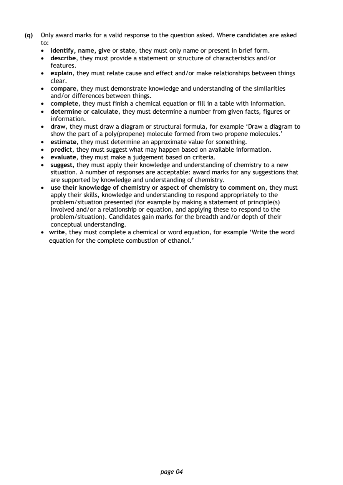
Selectable page text
(q) Only award marks for a valid response to the question asked. Where candidates are asked
to:
• identify, name, give or state, they must only name or present in brief form.
• describe, they must provide a statement or structure of characteristics and/or
features.
• explain, they must relate cause and effect and/or make relationships between things
clear.
• compare, they must demonstrate knowledge and understanding of the similarities
and/or differences between things.
• complete, they must finish a chemical equation or fill in a table with information.
• determine or calculate, they must determine a number from given facts, figures or
information.
• draw, they must draw a diagram or structural formula, for example ‘Draw a diagram to
show the part of a poly(propene) molecule formed from two propene molecules.’
• estimate, they must determine an approximate value for something.
• predict, they must suggest what may happen based on available information.
• evaluate, they must make a judgement based on criteria.
• suggest, they must apply their knowledge and understanding of chemistry to a new
situation. A number of responses are acceptable: award marks for any suggestions that
are supported by knowledge and understanding of chemistry.
• use their knowledge of chemistry or aspect of chemistry to comment on, they must
apply their skills, knowledge and understanding to respond appropriately to the
problem/situation presented (for example by making a statement of principle(s)
involved and/or a relationship or equation, and applying these to respond to the
problem/situation). Candidates gain marks for the breadth and/or depth of their
conceptual understanding.
• write, they must complete a chemical or word equation, for example ‘Write the word
equation for the complete combustion of ethanol.’
page 04PDF page 5
Paper 2, Question 1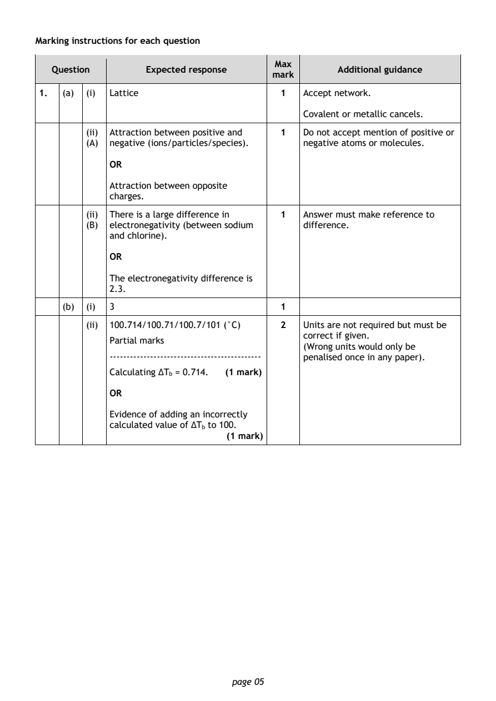
Selectable page text
Marking instructions for each question
Max
Question Expected response Additional guidance
mark
1. (a) (i) Lattice 1 Accept network.
Covalent or metallic cancels.
(ii) Attraction between positive and 1 Do not accept mention of positive or
(A) negative (ions/particles/species). negative atoms or molecules.
OR
Attraction between opposite
charges.
(ii) There is a large difference in 1 Answer must make reference to
(B) electronegativity (between sodium difference.
and chlorine).
OR
The electronegativity difference is
2.3.
(b) (i) 3 1
(ii) 100.714/100.71/100.7/101 (°C) 2 Units are not required but must be
correct if given.
Partial marks
(Wrong units would only be
--------------------------------------------- penalised once in any paper).
Calculating ΔT = 0.714. (1 mark)
b
OR
Evidence of adding an incorrectly
calculated value of ΔT to 100.
b
(1 mark)
page 05PDF page 6
Paper 2, Question 2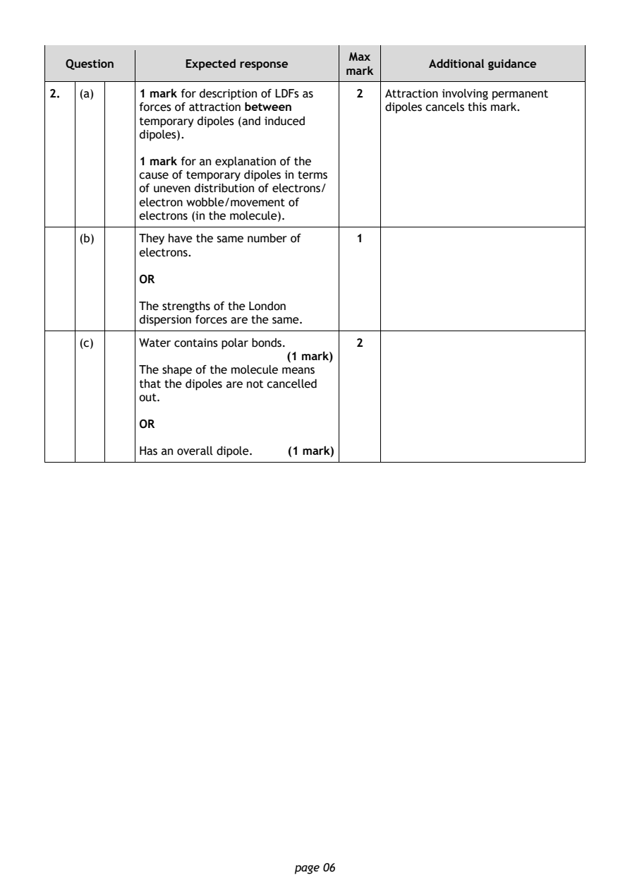
Selectable page text
Max
Question Expected response Additional guidance
mark
2. (a) 1 mark for description of LDFs as 2 Attraction involving permanent
forces of attraction between dipoles cancels this mark.
temporary dipoles (and induced
dipoles).
1 mark for an explanation of the
cause of temporary dipoles in terms
of uneven distribution of electrons/
electron wobble/movement of
electrons (in the molecule).
(b) They have the same number of 1
electrons.
OR
The strengths of the London
dispersion forces are the same.
(c) Water contains polar bonds. 2
(1 mark)
The shape of the molecule means
that the dipoles are not cancelled
out.
OR
Has an overall dipole. (1 mark)
page 06PDF page 7
Paper 2, Question 3Selectable page text
Max
Question Expected response Additional guidance
mark
3. Award 1 mark where the candidate 3
has demonstrated, at an appropriate
level, a limited understanding of the
chemistry involved. They have made
some statement(s) which are
relevant to the situation, showing
that they have understood at least a
little of the chemistry within the
problem.
Award 2 marks where the candidate
has demonstrated, at an appropriate
level, a reasonable understanding of
the chemistry involved. They make
some statement(s) which are
relevant to the situation, showing
that they have understood the
problem.
Award 3 marks where the candidate
has demonstrated, at an appropriate
level, a good understanding of the
chemistry involved. They show a
good comprehension of the
chemistry of the situation and
provide a logically correct answer to
the question posed. This type of
response might include a statement
of the principles involved, a
relationship or an equation, and the
application of these to respond to
the problem. The answer does not
need to be ‘excellent’ or ‘complete’
for the candidate to gain full marks.
Award 0 marks where the candidate
has not demonstrated, at an
appropriate level, an understanding
of the chemistry involved. There is
no evidence that they have
recognised the area of chemistry
involved, or they have not given any
statement of a relevant chemistry
principle. Award this mark also if the
candidate merely restates the
chemistry given in the question.
page 07PDF page 8
Paper 2, Question 4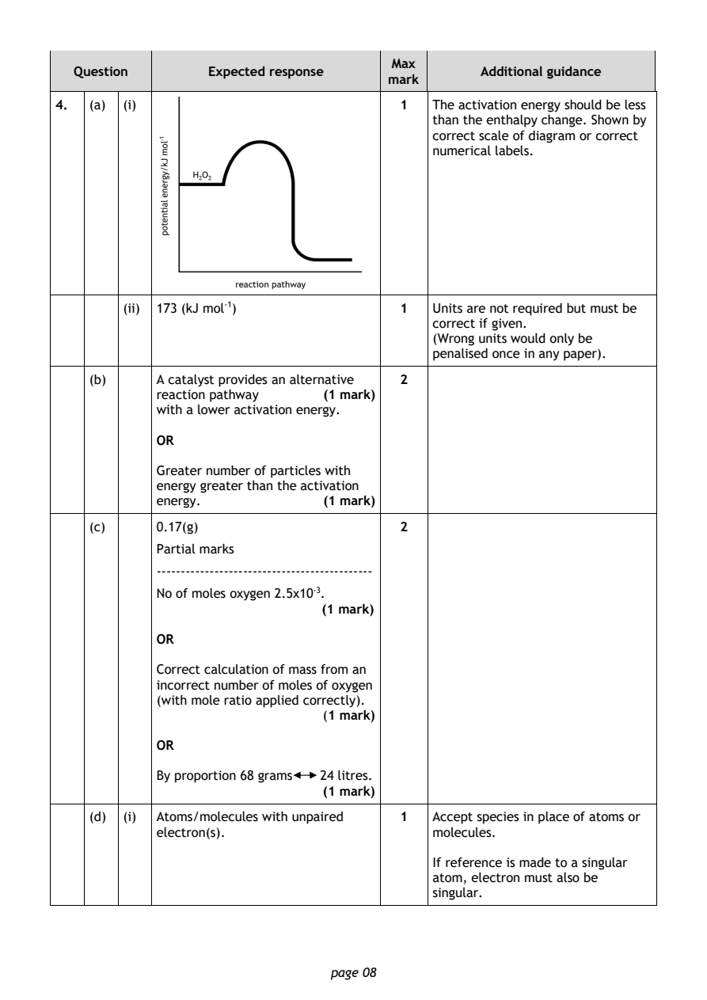
Selectable page text
Max
Question Expected response Additional guidance
mark
4. (a) (i) 1 The activation energy should be less
than the enthalpy change. Shown by
correct scale of diagram or correct
numerical labels.
(ii) 173 (kJ mol⁻¹) 1 Units are not required but must be
correct if given.
(Wrong units would only be
penalised once in any paper).
(b) A catalyst provides an alternative 2
reaction pathway (1 mark)
with a lower activation energy.
OR
Greater number of particles with
energy greater than the activation
energy. (1 mark)
(c) 0.17(g) 2
Partial marks
---------------------------------------------
No of moles oxygen 2.5x10⁻³.
(1 mark)
OR
Correct calculation of mass from an
incorrect number of moles of oxygen
(with mole ratio applied correctly).
(1 mark)
OR
By proportion 68 grams 24 litres.
(1 mark)
(d) (i) Atoms/molecules with unpaired 1 Accept species in place of atoms or
electron(s). molecules.
If reference is made to a singular
atom, electron must also be
singular.
page 08PDF page 9
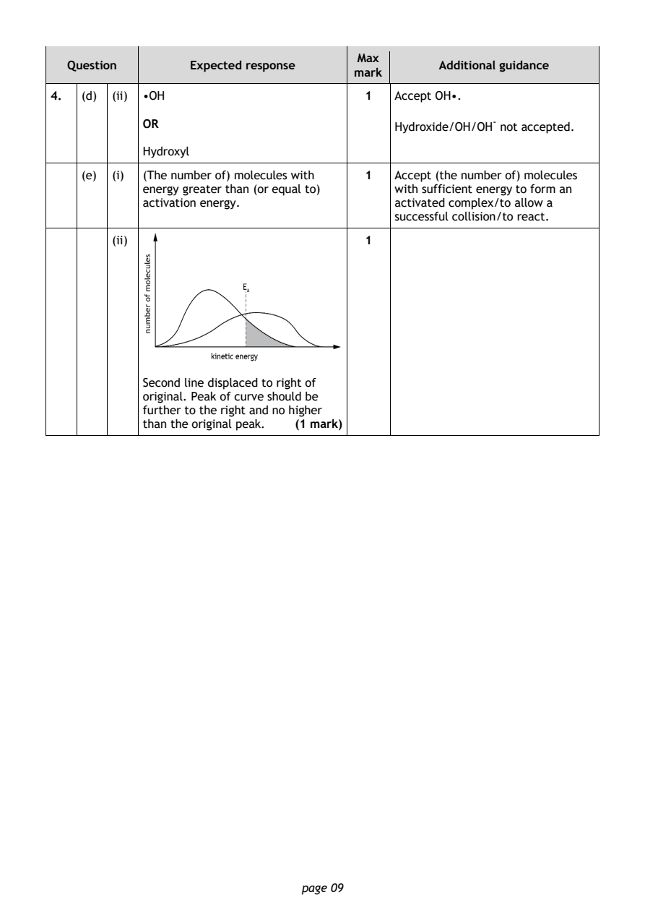
Selectable page text
Max
Question Expected response Additional guidance
mark
4. (d) (ii) •OH 1 Accept OH•.
OR Hydroxide/OH/OH⁻ not accepted.
Hydroxyl
(e) (i) (The number of) molecules with 1 Accept (the number of) molecules
energy greater than (or equal to) with sufficient energy to form an
activation energy. activated complex/to allow a
successful collision/to react.
(ii) 1
Second line displaced to right of
original. Peak of curve should be
further to the right and no higher
than the original peak. (1 mark)
page 09PDF page 10
Paper 2, Question 5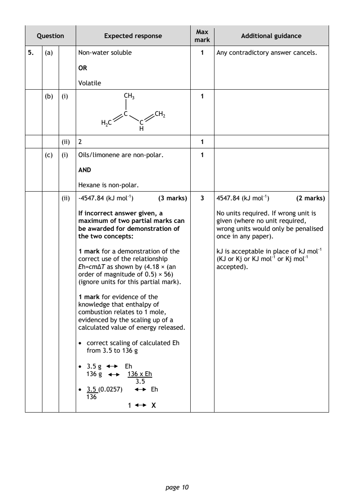
Selectable page text
Max
Question Expected response Additional guidance
mark
5. (a) Non-water soluble 1 Any contradictory answer cancels.
OR
Volatile
(b) (i) 1
(ii) 2 1
(c) (i) Oils/limonene are non-polar. 1
AND
Hexane is non-polar.
(ii) -4547.84 (kJ mol⁻¹) (3 marks) 3 4547.84 (kJ mol⁻¹) (2 marks)
If incorrect answer given, a No units required. If wrong unit is
maximum of two partial marks can given (where no unit required,
be awarded for demonstration of wrong units would only be penalised
the two concepts: once in any paper).
1 mark for a demonstration of the kJ is acceptable in place of kJ mol⁻¹
correct use of the relationship (KJ or Kj or KJ mol⁻¹ or Kj mol⁻¹
Eh=cm∆T as shown by (4.18 × (an accepted).
order of magnitude of 0.5) × 56)
(ignore units for this partial mark).
1 mark for evidence of the
knowledge that enthalpy of
combustion relates to 1 mole,
evidenced by the scaling up of a
calculated value of energy released.
• correct scaling of calculated Eh
from 3.5 to 136 g
• 3.5 g Eh
136 g 136 x Eh
3.5
• 3.5 (0.0257) Eh
136
1 X
page 10PDF page 11
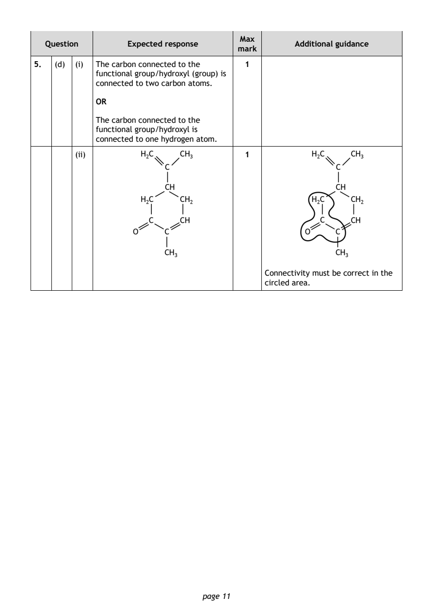
Selectable page text
Max
Question Expected response Additional guidance
mark
5. (d) (i) The carbon connected to the 1
functional group/hydroxyl (group) is
connected to two carbon atoms.
OR
The carbon connected to the
functional group/hydroxyl is
connected to one hydrogen atom.
(ii) 1
Connectivity must be correct in the
circled area.
page 11PDF page 12
Paper 2, Question 6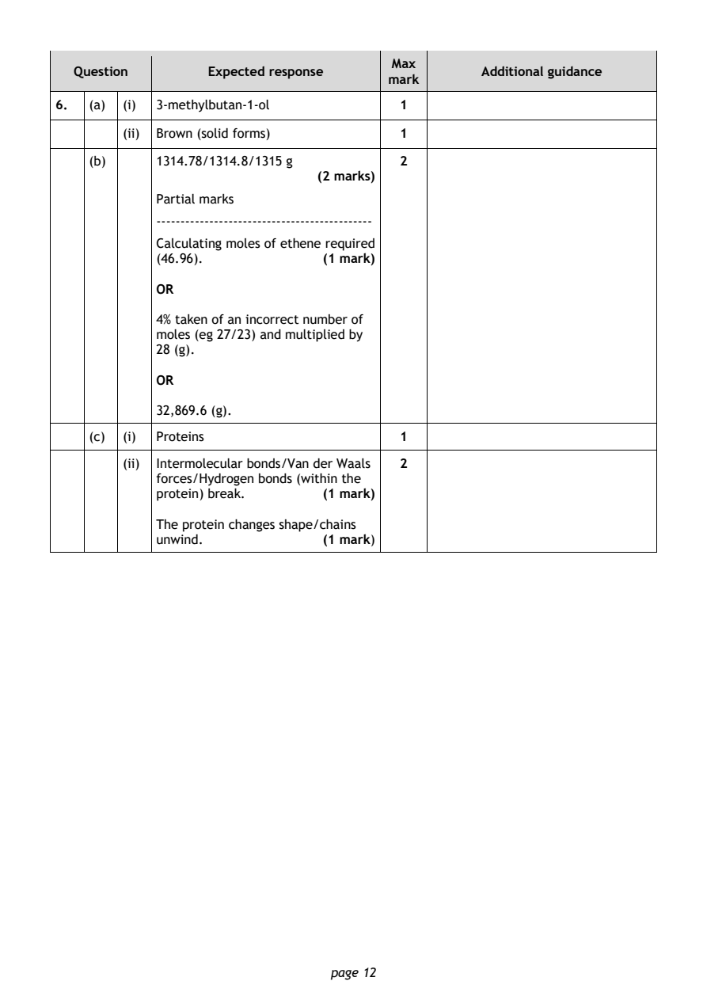
Selectable page text
Max
Question Expected response Additional guidance
mark
6. (a) (i) 3-methylbutan-1-ol 1
(ii) Brown (solid forms) 1
(b) 1314.78/1314.8/1315 g 2
(2 marks)
Partial marks
---------------------------------------------
Calculating moles of ethene required
(46.96). (1 mark)
OR
4% taken of an incorrect number of
moles (eg 27/23) and multiplied by
28 (g).
OR
32,869.6 (g).
(c) (i) Proteins 1
(ii) Intermolecular bonds/Van der Waals 2
forces/Hydrogen bonds (within the
protein) break. (1 mark)
The protein changes shape/chains
unwind. (1 mark)
page 12PDF page 13
Paper 2, Question 7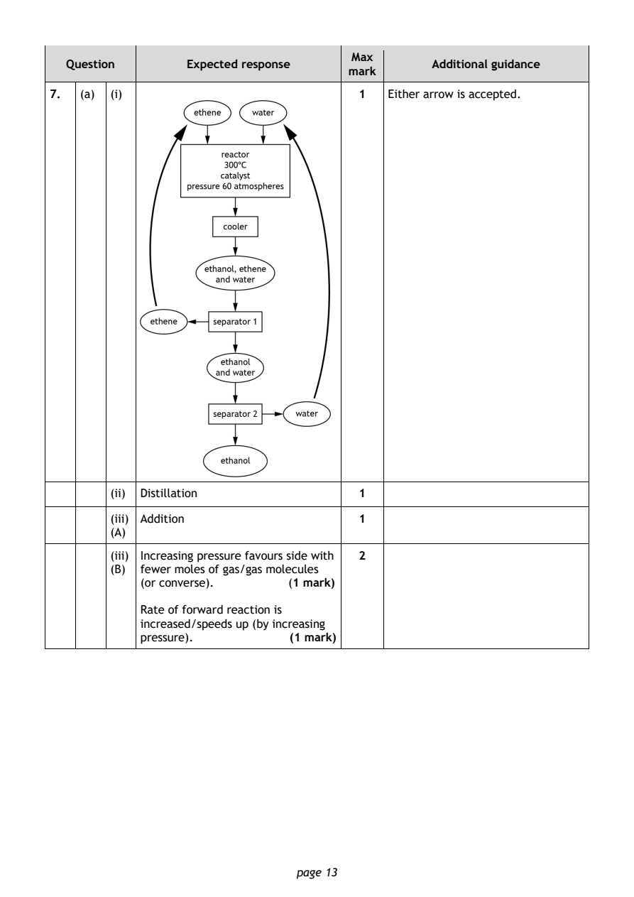
Selectable page text
Max
Question Expected response Additional guidance
mark
7. (a) (i) 1 Either arrow is accepted.
(ii) Distillation 1
(iii) Addition 1
(A)
(iii) Increasing pressure favours side with 2
(B) fewer moles of gas/gas molecules
(or converse). (1 mark)
Rate of forward reaction is
increased/speeds up (by increasing
pressure). (1 mark)
page 13PDF page 14
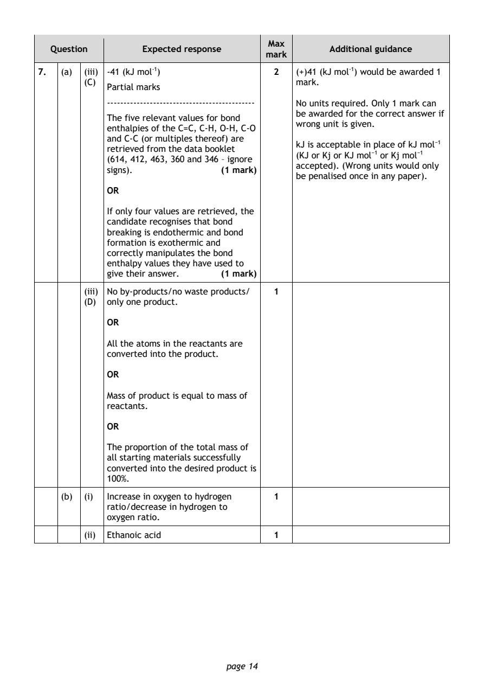
Selectable page text
Max
Question Expected response Additional guidance
mark
7. (a) (iii) -41 (kJ mol⁻¹) 2 (+)41 (kJ mol⁻¹) would be awarded 1
(C) mark.
Partial marks
--------------------------------------------- No units required. Only 1 mark can
be awarded for the correct answer if
The five relevant values for bond
wrong unit is given.
enthalpies of the C=C, C-H, O-H, C-O
and C-C (or multiples thereof) are
kJ is acceptable in place of kJ mol⁻¹
retrieved from the data booklet
(KJ or Kj or KJ mol⁻¹ or Kj mol⁻¹
(614, 412, 463, 360 and 346 – ignore
accepted). (Wrong units would only
signs). (1 mark)
be penalised once in any paper).
OR
If only four values are retrieved, the
candidate recognises that bond
breaking is endothermic and bond
formation is exothermic and
correctly manipulates the bond
enthalpy values they have used to
give their answer. (1 mark)
(iii) No by-products/no waste products/ 1
(D) only one product.
OR
All the atoms in the reactants are
converted into the product.
OR
Mass of product is equal to mass of
reactants.
OR
The proportion of the total mass of
all starting materials successfully
converted into the desired product is
100%.
(b) (i) Increase in oxygen to hydrogen 1
ratio/decrease in hydrogen to
oxygen ratio.
(ii) Ethanoic acid 1
page 14PDF page 15
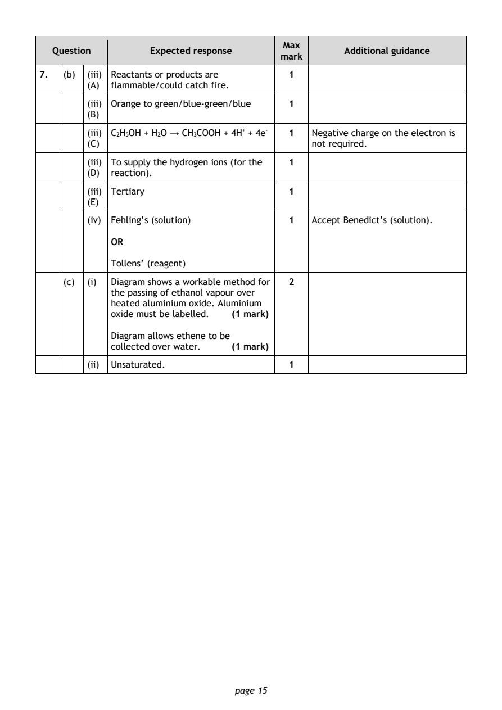
Selectable page text
Max
Question Expected response Additional guidance
mark
7. (b) (iii) Reactants or products are 1
(A) flammable/could catch fire.
(iii) Orange to green/blue-green/blue 1
(B)
(iii) C₂H₅OH + H₂O → CH₃COOH + 4H⁺ + 4e⁻ 1 Negative charge on the electron is
(C) not required.
(iii) To supply the hydrogen ions (for the 1
(D) reaction).
(iii) Tertiary 1
(E)
(iv) Fehling’s (solution) 1 Accept Benedict’s (solution).
OR
Tollens’ (reagent)
(c) (i) Diagram shows a workable method for 2
the passing of ethanol vapour over
heated aluminium oxide. Aluminium
oxide must be labelled. (1 mark)
Diagram allows ethene to be
collected over water. (1 mark)
(ii) Unsaturated. 1
page 15PDF page 16
Paper 2, Question 8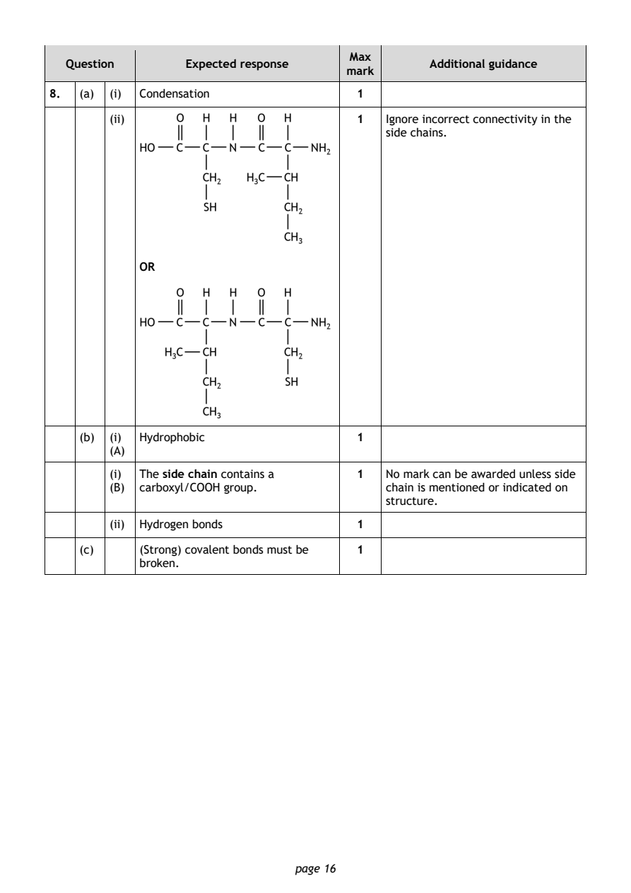
Selectable page text
Max
Question Expected response Additional guidance
mark
8. (a) (i) Condensation 1
(ii) 1 Ignore incorrect connectivity in the
side chains.
OR
(b) (i) Hydrophobic 1
(A)
(i) The side chain contains a 1 No mark can be awarded unless side
(B) carboxyl/COOH group. chain is mentioned or indicated on
structure.
(ii) Hydrogen bonds 1
(c) (Strong) covalent bonds must be 1
broken.
page 16PDF page 17
Paper 2, Question 9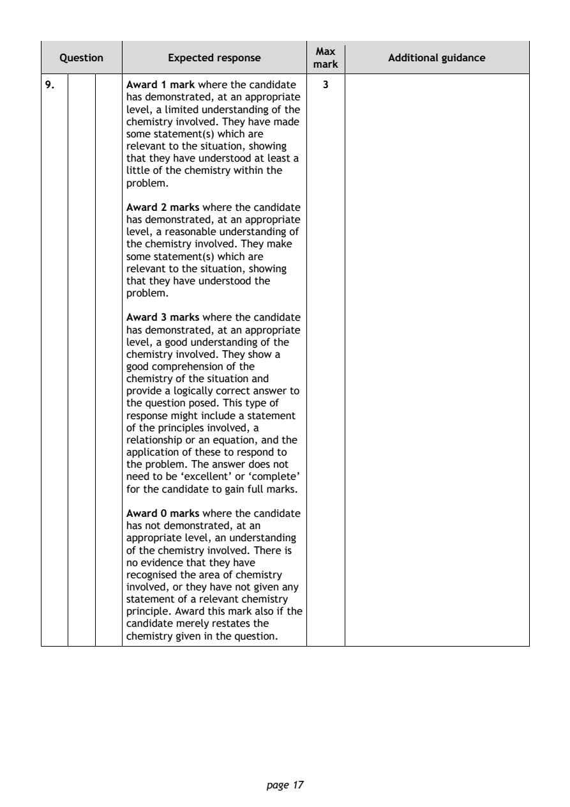
Selectable page text
Max
Question Expected response Additional guidance
mark
9. Award 1 mark where the candidate 3
has demonstrated, at an appropriate
level, a limited understanding of the
chemistry involved. They have made
some statement(s) which are
relevant to the situation, showing
that they have understood at least a
little of the chemistry within the
problem.
Award 2 marks where the candidate
has demonstrated, at an appropriate
level, a reasonable understanding of
the chemistry involved. They make
some statement(s) which are
relevant to the situation, showing
that they have understood the
problem.
Award 3 marks where the candidate
has demonstrated, at an appropriate
level, a good understanding of the
chemistry involved. They show a
good comprehension of the
chemistry of the situation and
provide a logically correct answer to
the question posed. This type of
response might include a statement
of the principles involved, a
relationship or an equation, and the
application of these to respond to
the problem. The answer does not
need to be ‘excellent’ or ‘complete’
for the candidate to gain full marks.
Award 0 marks where the candidate
has not demonstrated, at an
appropriate level, an understanding
of the chemistry involved. There is
no evidence that they have
recognised the area of chemistry
involved, or they have not given any
statement of a relevant chemistry
principle. Award this mark also if the
candidate merely restates the
chemistry given in the question.
page 17PDF page 18
Paper 2, Question 10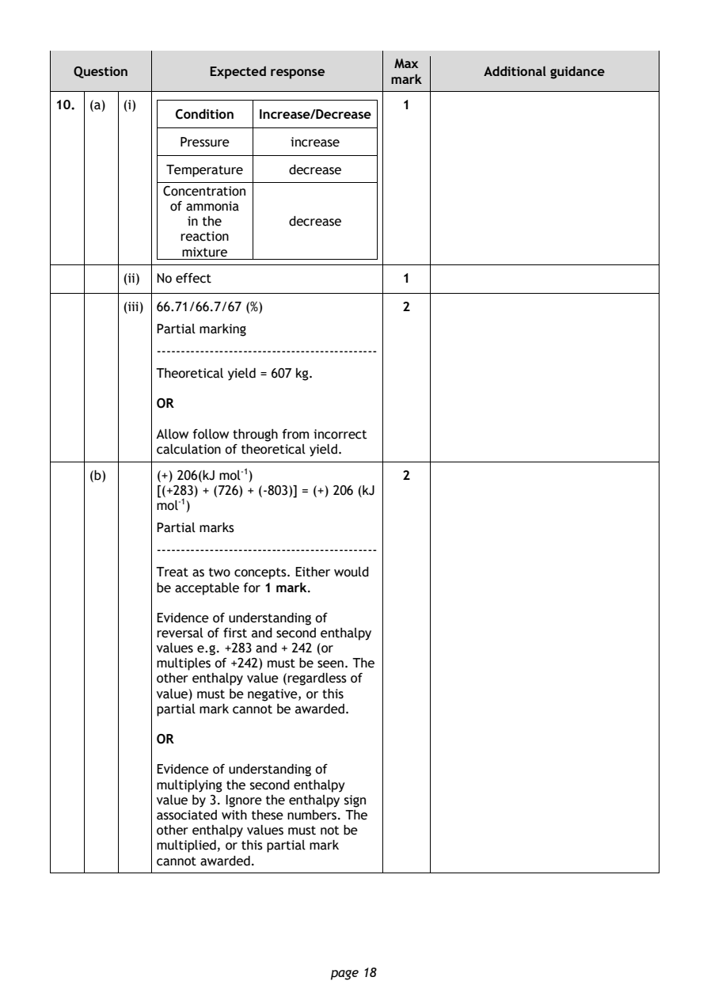
Selectable page text
Max
Question Expected response Additional guidance
mark
10. (a) (i) 1
Condition Increase/Decrease
Pressure increase
Temperature decrease
Concentration
of ammonia
in the decrease
reaction
mixture
(ii) No effect 1
(iii) 66.71/66.7/67 (%) 2
Partial marking
----------------------------------------------
Theoretical yield = 607 kg.
OR
Allow follow through from incorrect
calculation of theoretical yield.
(b) (+) 206(kJ mol⁻¹) 2
[(+283) + (726) + (-803)] = (+) 206 (kJ
mol⁻¹)
Partial marks
----------------------------------------------
Treat as two concepts. Either would
be acceptable for 1 mark.
Evidence of understanding of
reversal of first and second enthalpy
values e.g. +283 and + 242 (or
multiples of +242) must be seen. The
other enthalpy value (regardless of
value) must be negative, or this
partial mark cannot be awarded.
OR
Evidence of understanding of
multiplying the second enthalpy
value by 3. Ignore the enthalpy sign
associated with these numbers. The
other enthalpy values must not be
multiplied, or this partial mark
cannot awarded.
page 18PDF page 19
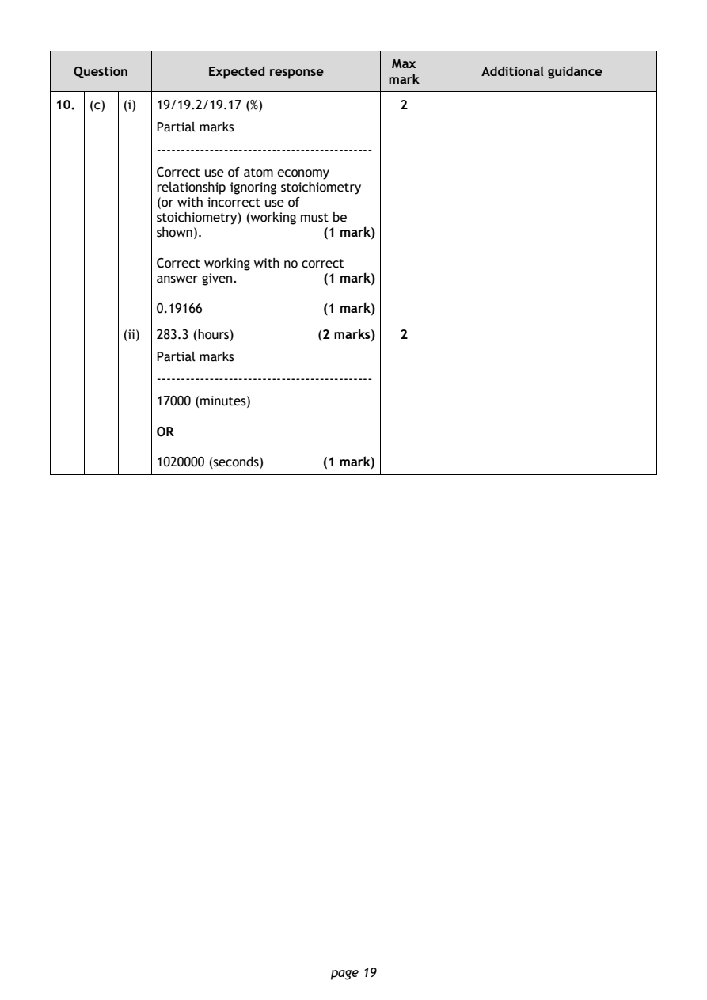
Selectable page text
Max
Question Expected response Additional guidance
mark
10. (c) (i) 19/19.2/19.17 (%) 2
Partial marks
---------------------------------------------
Correct use of atom economy
relationship ignoring stoichiometry
(or with incorrect use of
stoichiometry) (working must be
shown). (1 mark)
Correct working with no correct
answer given. (1 mark)
0.19166 (1 mark)
(ii) 283.3 (hours) (2 marks) 2
Partial marks
---------------------------------------------
17000 (minutes)
OR
1020000 (seconds) (1 mark)
page 19PDF page 20
Paper 2, Question 11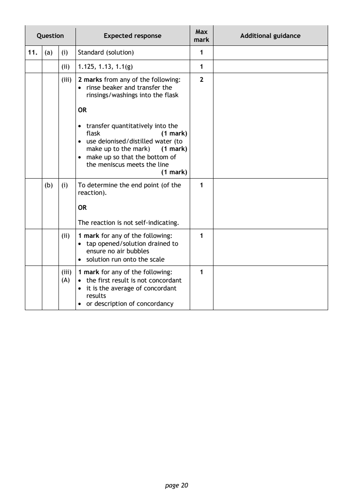
Selectable page text
Max
Question Expected response Additional guidance
mark
11. (a) (i) Standard (solution) 1
(ii) 1.125, 1.13, 1.1(g) 1
(iii) 2 marks from any of the following: 2
• rinse beaker and transfer the
rinsings/washings into the flask
OR
• transfer quantitatively into the
flask (1 mark)
• use deionised/distilled water (to
make up to the mark) (1 mark)
• make up so that the bottom of
the meniscus meets the line
(1 mark)
(b) (i) To determine the end point (of the 1
reaction).
OR
The reaction is not self-indicating.
(ii) 1 mark for any of the following: 1
• tap opened/solution drained to
ensure no air bubbles
• solution run onto the scale
(iii) 1 mark for any of the following: 1
(A) • the first result is not concordant
• it is the average of concordant
results
• or description of concordancy
page 20PDF page 21
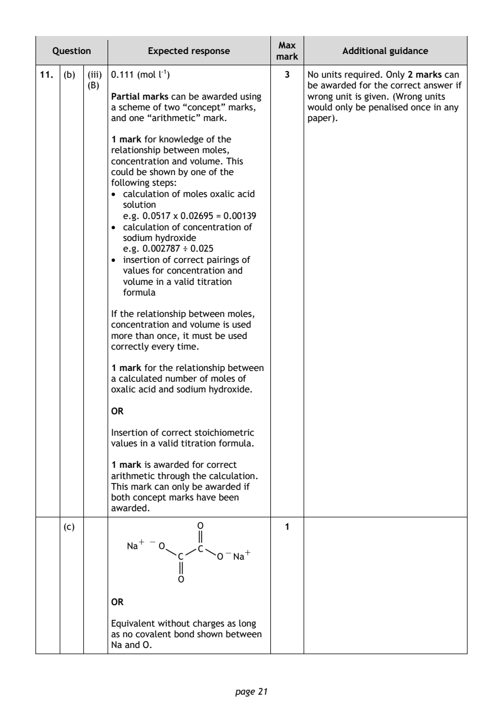
Selectable page text
Max
Question Expected response Additional guidance
mark
11. (b) (iii) 0.111 (mol l⁻¹) 3 No units required. Only 2 marks can
(B) be awarded for the correct answer if
Partial marks can be awarded using wrong unit is given. (Wrong units
a scheme of two “concept” marks, would only be penalised once in any
and one “arithmetic” mark. paper).
1 mark for knowledge of the
relationship between moles,
concentration and volume. This
could be shown by one of the
following steps:
• calculation of moles oxalic acid
solution
e.g. 0.0517 x 0.02695 = 0.00139
• calculation of concentration of
sodium hydroxide
e.g. 0.002787 ÷ 0.025
• insertion of correct pairings of
values for concentration and
volume in a valid titration
formula
If the relationship between moles,
concentration and volume is used
more than once, it must be used
correctly every time.
1 mark for the relationship between
a calculated number of moles of
oxalic acid and sodium hydroxide.
OR
Insertion of correct stoichiometric
values in a valid titration formula.
1 mark is awarded for correct
arithmetic through the calculation.
This mark can only be awarded if
both concept marks have been
awarded.
(c) 1
OR
Equivalent without charges as long
as no covalent bond shown between
Na and O.
page 21PDF page 22
Paper 2, Question 12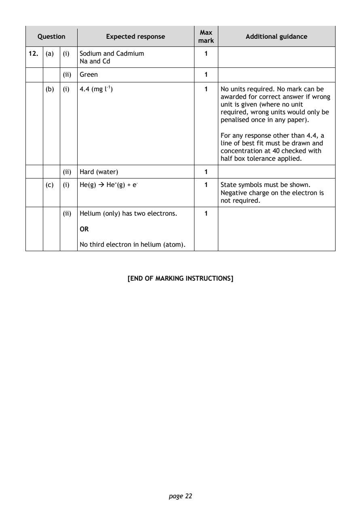
Selectable page text
Max
Question Expected response Additional guidance
mark
12. (a) (i) Sodium and Cadmium 1
Na and Cd
(ii) Green 1
(b) (i) 4.4 (mg l⁻¹) 1 No units required. No mark can be
awarded for correct answer if wrong
unit is given (where no unit
required, wrong units would only be
penalised once in any paper).
For any response other than 4.4, a
line of best fit must be drawn and
concentration at 40 checked with
half box tolerance applied.
(ii) Hard (water) 1
(c) (i) He(g) → He⁺(g) + e⁻ 1 State symbols must be shown.
Negative charge on the electron is
not required.
(ii) Helium (only) has two electrons. 1
OR
No third electron in helium (atom).
[END OF MARKING INSTRUCTIONS]
page 22